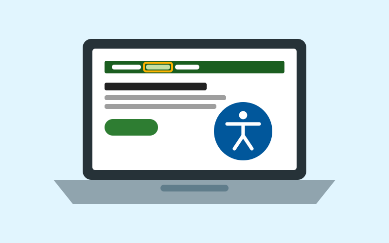

Inclusão digital
Acessibilidade digital no EcoVerde
Acessibilidade não é um recurso extra: é um dos pilares do projeto. Conheça as medidas aplicadas neste portal e as boas práticas que as inspiraram.
Nosso compromisso
O EcoVerde foi desenvolvido tendo como referência as Diretrizes de Acessibilidade para Conteúdo Web (WCAG), nível AA, as especificações WAI-ARIA e o Modelo de Acessibilidade em Governo Eletrônico (eMAG), que inspirou a barra de atalhos no topo das páginas.
O público prioritário do projeto são Pessoas com Deficiência visual, motora, auditiva e cognitiva. Por isso, cada página foi pensada para funcionar com teclado, leitores de tela, ampliação de texto e alto contraste.
Encontrou alguma barreira? Conte para a equipe pelo formulário de contato.

Teclas de atalho
Os atalhos estão disponíveis em todas as páginas e seguem o padrão do eMAG. A combinação de teclas varia conforme o navegador e o sistema operacional.
| Tecla | Ação | Chrome e Edge (Windows) | Firefox (Windows) | Safari e Chrome (macOS) |
|---|---|---|---|---|
| 1 | Ir para o conteúdo principal | Alt + 1 | Alt + Shift + 1 | Control + Option + 1 |
| 2 | Ir para o menu principal | Alt + 2 | Alt + Shift + 2 | Control + Option + 2 |
| 3 | Ir para o rodapé | Alt + 3 | Alt + Shift + 3 | Control + Option + 3 |
| 4 | Abrir esta página de acessibilidade | Alt + 4 | Alt + Shift + 4 | Control + Option + 4 |
Em telas pequenas, a tabela pode ser rolada horizontalmente.
Navegação por teclado
Todo o portal pode ser utilizado sem mouse. Os elementos interativos são links e botões reais do HTML, na mesma ordem em que aparecem visualmente, e exibem um contorno amarelo bem visível quando recebem foco.
- Tab avança para o próximo link, botão ou campo; Shift + Tab volta.
- Enter ativa links e botões; Espaço ativa botões e marca caixas de seleção.
- Setas do teclado escolhem opções em grupos de botões de opção e percorrem os destaques do carrossel.
- Esc fecha o menu em telas pequenas e devolve o foco ao botão “Menu”.
O primeiro item de cada página é o link “Pular para o conteúdo principal”, que aparece ao pressionar Tab.